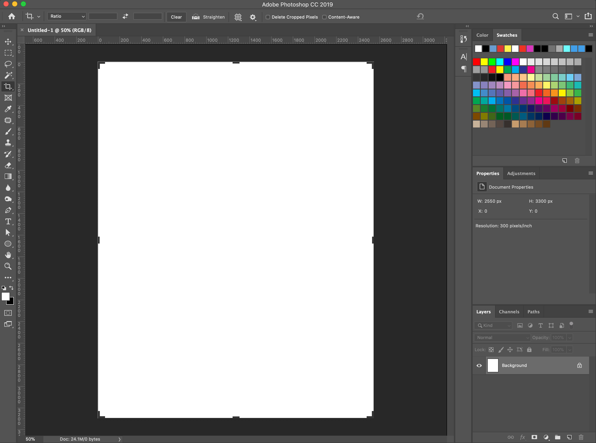
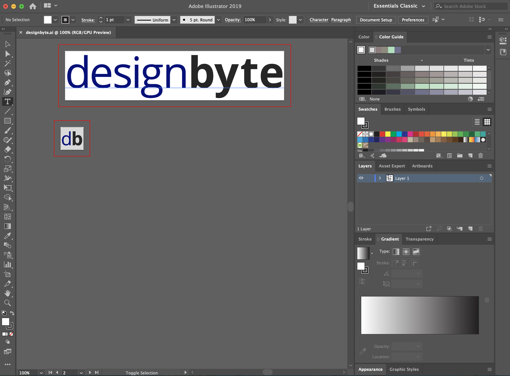
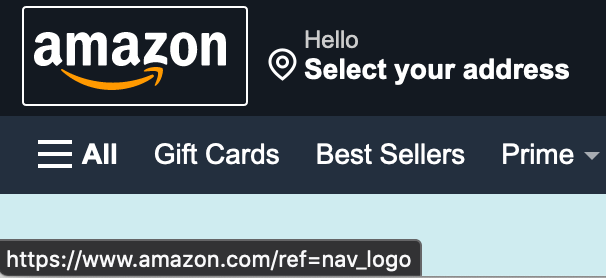

Consistency
Consistency, in a basic sense, refers to the following of established rules. In design, it is believed that a consistent system is more usable and easy to learn if it maintains consistency across similar elements. We can break consistency into 4 different types: Aesthetic, Functional, Internal, and External.
Aesthetic Consistency
Aesthetic consistency covers elements which have a similar look, with color, font, and the like. Using similar looks for elements can assist with building recognition in a system.
As a user becomes more acquainted with a product, they will become accustomed to aesthetic similarities and their associations.
Imagine you are making a purchase on a shopping website. You go through steps 1 and 2 and note that the confirm button is a nice green color while the back or cancel button is a dark gray. As you finish up with step 3 you notice that the bottom that the color of the Proceed button is gray while the cancel button is green. This confuses you, but you are able to recover eventually and buy yourself that pair of shoes you've had on your wishlist for months.
If we deviate from aesthetic consistency, the usability of a system is decreased, causing potential confusion or room for error in the user base.
Wouldn't it be weird if we changed the style of a paragraph mid-sentence and just kind of ignored that it happened? Or if we used a bunch of different typefaces all on the same site?
Let's ignore that this happened and call it a day.
If we set an aesthetic standard, it only improves the system to follow it. Unless there is a good reason to deviate, implementing inconsistent aesthetics in a system can only cause issues with usability of a system.
Functional Consistency
Similar functions should execute in similar manner. By pairing the meaning of a function with an action, the learnability of a system is greatly improved.
If a similar function behaves similarly in multiple areas of a system, this results in the knowledge of the function being applicable across the system. Mandating multiple manners of executing the same function or changing the behavior of a function can result in problems with usability.
Try out the buttons in the following blocks and follow the prompts.
Click the apply button.
Clicking the apply button added a happy face icon to the block, but clicking the deny button made it sad.
Click the apply button.
Clicking apply makes the block happy again but clicking deny makes it sad. We're starting to understand this.
Click the apply button.
Again. Apply made the block happy. This makes sense.
Click the apply button.
Clicking apply made it a sad face. This isn't what we expected. Why is that? Did we do something wrong?
If we alter the behavior of a function expected to behave the same as another, a user could be confused and feel there is an error with the system. If a function isn't intended to behave the same as another similar function in the system, consider using different verbiage or manner of execution to avoid potential errors or usability issues.
Internal Consistency
Internal consistency applies to functional and aesthetic consistency within a system or family of systems as a whole.
Some examples can be seen when looking at the the Adobe Creative Cloud family of applications.
 Looking at these two applications, there many similarities. From colors and layout to functionality, it is abundantly apparent that these applications are designed by the same company.
Pay special attention to the aesthetics and functions within both applications. While the two offer different use cases, they not only share a similar look and feel but they share many similar functions.
This demonstrates internal consistency given that the applications are (a.) consistent with themselves and (b.) consist within the family of Adobe applications.
In short, internal consistency covers both the aesthetic and functional consistencies within a system or across a family of systems, so it is important to plan and leverage this accordingly. Utilizing similar aesthetics across a system or family can create a more inviting experience for a user overall. Applying functional consistency across applications can aid tremendously with usability, as a user of one system could easily transition to another if it offers similar functions.
External Consistency
Given the nature of internal consistency, it is easy to assume what external consistency applies to — external consistency affects the similarity of two separate systems' aesthetics and functions.
Of course, it is not legal to completely use the same aesthetic and functions as another company's system, but there are many common standards this can apply to.
For instance, an external, aesthetic consistency seen across many systems is the use of blue text to indicate a link to another webpage. This is a standard that is quite possibly universally known. That's not to say all hyperlinks must be blue, however, but it is a common practice that is known by many users and used in many systems.
At a functional level, many systems consistently utilize the brand logo or site name in the header as a "home" button.
On both Amazon and Twitter, clicking the brand logo in the upper left of the screen results in the home page of the site being opened. This is an external, functional consistency.
So, while following the exact same aesthetic or functional standards as another brand is not ideal nor advisable, following similar, universal standards is always a positive and can increase the usability of a system. Unless using a licensed or open source framework, mirroring another brand's aesthetics or functions is not a wise decision and could be considered illegal.